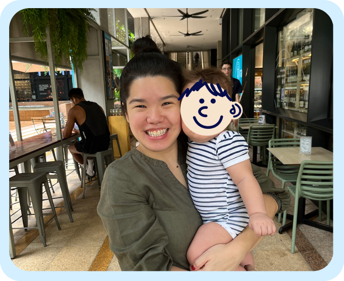

- Kanak-kanak berumur 12 bulan dan ke bawah
- Maksimum 2 orang anak bagi setiap isi rumah
- Kini hanya menghantar ke Lembah Klang, Kuala Lumpur
Bantuan Susu Formula Untuk Keluarga Yang Memerlukan.
Inisiatif Susu menyediakan susu formula bayi percuma untuk keluarga yang memerlukan di Lembah Klang.
Borang Permintaan SusuBagaimana ia berfungsi?
Sila ambil perhatian
Disebabkan inisiatif ini mempunyai dana terhad dan masih dalam proses pembangunan, Inisiatif Susu hanya menyediakan susu formula percuma untuk:
2
Tunggu Maklum Balas
Inisiatif Susu akan membalas dalam masa 3 hari* melalui emel.
3
Tunggu Penghantaran Susu
Setelah disahkan, susu formula akan dihantar ke rumah anda!
Hati Inisiatif Susu adalah untuk membantu memberi makanan kepada bayi yang keluarganya benar-benar tidak mampu, sambil meringankan beban kewangan mereka pada masa yang sama.
Inisiatif Susu percaya bahawa tiada bayi yang patut kelaparan, tanpa mengira bangsa, agama dan latar belakang.
Tentang Kami
Bagaimana cara menghubungi Inisiatif Susu?
Anda boleh menghantar emel ke themilkinitiative@gmail.com.
Siapa yang menguruskan Inisiatif Susu?
Hai, saya Joyce, seorang pereka dan rakyat Malaysia. Kini, hanya saya yang menguruskan ini!
Apakah cerita di sebalik Inisiatif Susu?
Dengan seorang anak kecil di rumah, saya boleh memahami betapa tertekannya apabila bayi anda lapar tetapi tiada makanan.
Idea untuk projek ini bermula bertahun-tahun lalu selepas membaca dalam akhbar tempatan tentang seorang ayah yang dipenjarakan kerana mencuri susu formula untuk memberi makan kepada anaknya. Kisah itu terus terngiang di fikiran saya, dan mendorong saya untuk melakukan sesuatu.
Bagaimana Inisiatif Susu dibiayai?
Dengan simpanan peribadi saya! Inisiatif Susu tidak dibiayai melalui sumbangan daripada orang lain.